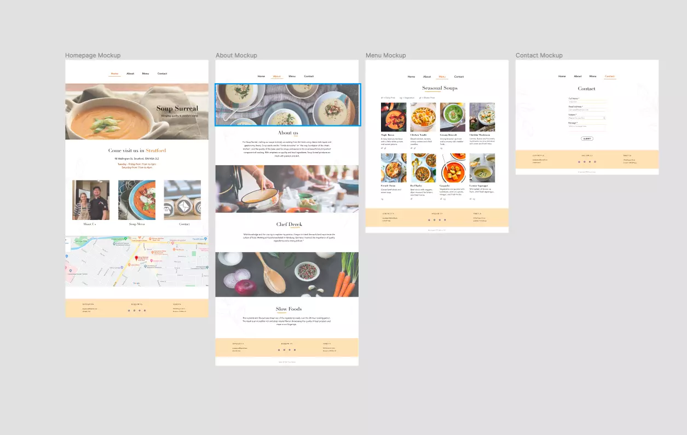

Soup Surreal Redesign
Case Study - Redesigning an outdated website
Role
CSS Lead
Duration
November 2019
Tools
Figma, Atom
Project type
Website development, UX design
Brief
On a cold winter's day, a warm cup of soup can feel so satisfying! Located in the heart of Stratford, Soup Surreal is a local business that is known for its tasty soups. It has become one of best places for soup in the Stratford community -- I for one can say that I am a regular, as it is conveniently placed right across the street from campus. However, in viewing their website, we found that it could use a redesign that will meet the restaurant's comforting feel.
My Role
My main role on the team was being the CSS lead. My responsibility as the lead was to code the stylesheet of the website, making sure that the design in the mockups were replicated onto the site. As a team member, I was also responsible to draft wireframes and mockups of design ideas to contribute to the final website design.
Team members
Teagan Chan
Gloria Li
Will Boehmer
The Problem
User Research
Analyzing the current website
When looking at the current website, we identified what design concepts work and which needed improving.
From our analysis, the main design flaws in the website were:
- Colour
- Overall-layout
- Responsiveness of the website
From our research, we created a strategic analysis report that outlines all of our research to present and how we plan on redesigning the new site. Here is the PDF of the full report
Design Process
Wireframes + Mockup
The next step of redesigning the site was to individually design wireframes and mockups for the new and improved site.
In my own design of the website, I wanted to simplify design by stripping out the muddy colours of the current site and adding more whitespace between content.
I went with a warm orange theme to establish a more heartwarming and comfortable feel to the page. Additionally, the content on the landing page The pictures were replaced with more vibrant soup images in contrast to the outdated photos.
Responsive Design - Mobile Solution
Although it wasn't required in the project, I went and also prototyped a mobile version of the website. Ideally, when designing, it is important to consider a mobile solution as it will ensure inclusivity and accessibility from all devices
Homepage
The homepage showcases the main components of a soup restaurant site, in other words, what people want to know first: the menu and where it is located.
Menu
Seeing as we are designing a site for a restaurant, the most obvious feature that people would want to see is the menu! I created a call to action button on the homepage making it easier to be directed to the menu in contrast to clicking on the hamburger menu.
Since Soup Surreal has a different menu for each season, we had to look into a way that would filter the soups by season or else the list of soups would be endless. On mobile, I made a small sort feature that would help differentiate the different seasonal soups.
About Page
The homepage showcases the main components of a soup restaurant site, in other words, what people want to know first: the menu and where it is located.
Drafting final wireframes
After doing our individual parts in creating our own designs, our team came together and collaborated to come up with a final design for the site.
We all agreed that whitespace was what was most important for the new site to make readability easier. The parts of the my design that got incorporated into the final design includes the part of the navigation, the sub-navigation, and the hero banner.
Drafting final mockups
From our wireframes we were able to create mockups so that when we code the website it would be easier for the team to visualize what we wanted to place on the page. We had to be strategic in developing a final mockup as we were only allowed to code using HTML and CSS.
Coding the redesigned website
Using the mockups as a way to visualize how our page was going to look, it was time to code the website. I was in charge of CSS and the styling of the website. My responsibility was making the new site look as exact as possible to the mockups and was the final person to double check the functionality and usability of the overall site. I made sure that there weren't any bugs or broken links among the pages.
Takeaways
Here were some of the takeaways from this project:
-
Importance of mockups for referencing in web development
Drafting up mockups really helped the team with finalizing the design of our re-design website and allowed us to be on the same page when it comes to coding the site
-
Compromising with code
While coding the HTML and CSS of the site, I found myself having to be creative and flexible with my code to get the design to look like the mockup.
Drafting up mockups really helped the team with finalizing the design of our re-design website and allowed us to be on the same page when it comes to coding the site
While coding the HTML and CSS of the site, I found myself having to be creative and flexible with my code to get the design to look like the mockup.
One of the hardest piece to code was adding the hamburger menu in the mobile layout using only HTML and CSS. After many attempts in rearranging the code, I was able to make it work. It was one of my most accomplished moments in working on this project